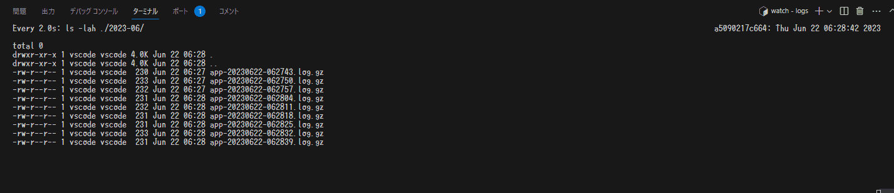

spring boot log4j2のログローテーション
目次
まとめ
- log4j2ならば、柔軟なローテション設定ができる
- 起動時にすでにある場合のローテーション
- ログ出力サイズによるログローテーション（今回はこれ）
- 時間によるログローテーション
- などなど
- log4j2ならば、ロールオーバーも簡単設定
- 保持期限によるロールオーバー(今回はこれ)
なんでこんなこと
オンプレミスでのアプリケーションではログはローカルのディスクに書き込むことになる。（多分それ以外の方法もいっぱいあるんだろうけど、おそらく一番ベターでしょ）
この場合、バッチやら、logrotateでいい感じにローテートしたり、自動削除などを行うのが割と古くからされてる方法ではあると思うが、最新のログライブラリではその辺カバーすることが出来ると思いお試しをしてみた。
ということで、サンプル
サンプルアプリケーションとしては、spring bootの現時点（2023/06/25）での最新である、 3.1.1 を利用して、標準であるlogbackからlog4j2に変更した状態とした。
処理内容は、一定間隔でログを出し続けるコマンドラインアプリケーション。（つまり、何にもしないし、Webでさえない）
ソースはここ
こまけぇことはいいから、どうなったん？
今回目指したのは、ログを容量によってローテーションして、一定期間でロールオーバーする状況。
つまり、ログを別の機構で バックアップ or ログ基盤への転送 をする想定で、一定容量のみローカルには保持するような状態とした。
（バックアップさえできれば無運用）
手元で試すため、時間や容量は小さい状態で試している。

ちゃんと、一定のログ容量でローテーション＆ロールオーバーがなされていることを確認した。
以下log4j2のconfig。
<?xml version="1.0" encoding="UTF-8"?>
<Configuration strict="true"
xmlns="http://logging.apache.org/log4j/2.0/config"
xmlns:xsi="http://www.w3.org/2001/XMLSchema-instance"
xsi:schemaLocation="http://logging.apache.org/log4j/2.0/config
https://raw.githubusercontent.com/apache/logging-log4j2/main/log4j-core/src/main/resources/Log4j-config.xsd">
<Properties>
<Property name="baseDir">logs</Property>
</Properties>
<Appenders>
<Console name="Console" target="SYSTEM_OUT">
<PatternLayout
pattern="%d{yyyy-MM-dd'T'HH:mm:ss.SSSZ} %highlight{%-5level}[%style{$${spring:spring.application.name},%X{traceId},%X{spanId},%X{sampled}}{blue}][%style{%t}{bright,blue}] %style{%C}{bright,yellow}: %m%n"/>
</Console>
<RollingFile name="ApplicationLog" fileName="${baseDir}/app.log"
filePattern="${baseDir}/$${date:yyyy-MM}/app-%d{yyyyMMdd-hhmmss}.log.gz">
<PatternLayout
pattern="%d{yyyy-MM-dd'T'HH:mm:ss.SSSZ} %-5level[$${spring:spring.application.name},%X{traceId},%X{spanId},%X{sampled}][%t] %C: %m%n"/>
<Policies><!-- Policiesは必須。 ローテーションポリシー -->
<OnStartupTriggeringPolicy /> <!-- 起動時にすでにログがあったら退避する -->
<SizeBasedTriggeringPolicy size="1 KB" /> <!-- 指定容量に達した場合にローテーションする -->
</Policies>
<!-- <DefaultRolloverStrategy max="20"/> シンプルに最大保持数で指定することも可能。-->
<DefaultRolloverStrategy><!-- 削除条件 -->
<Delete basePath="${baseDir}" maxDepth="2"> <!-- maxDepthはbasePath配下のフォルダをどこまでたどるかの深度 -->
<IfFileName glob="*/app-*.log.gz" /> <!-- 削除対象のファイル名フォーマット定義。正規表現でも指定可能 -->
<IFLastModified age="P1M" /> <!-- この時間を過ぎたら削除する。形式はISO 8601 -->
</Delete>
</DefaultRolloverStrategy>
</RollingFile>
</Appenders>
<Loggers>
<Root level="info">
<AppenderRef ref="Console"/>
<AppenderRef ref="ApplicationLog" />
</Root>
</Loggers>
</Configuration>
ちなみに
ログロールオーバーの方の時間設定に関しては、 ISO 8601 を利用して設定するらしい。
ちょっと特殊なので気を付けたし。（頭にPがついているのはそういうものらしい。あとは、まぁ、ね）